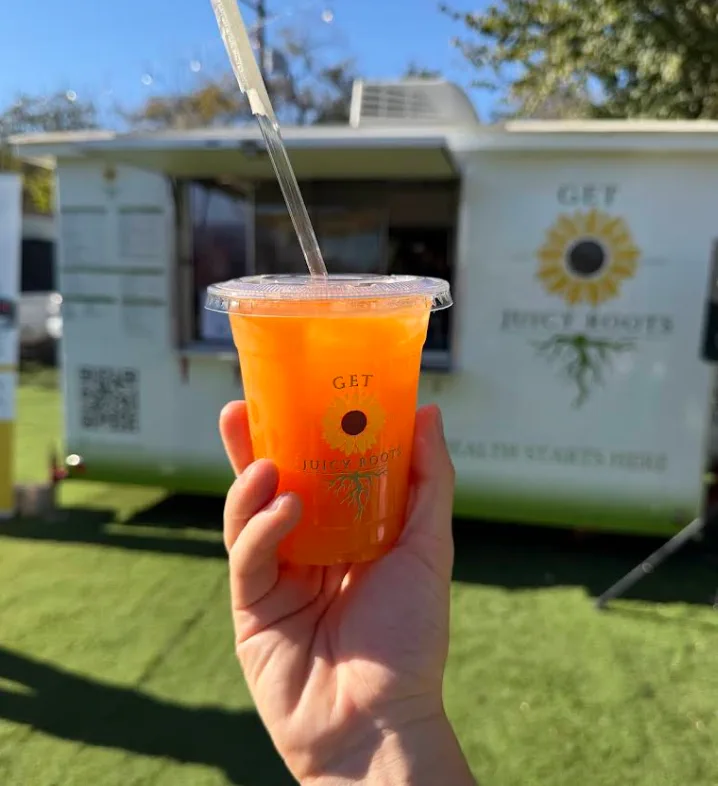
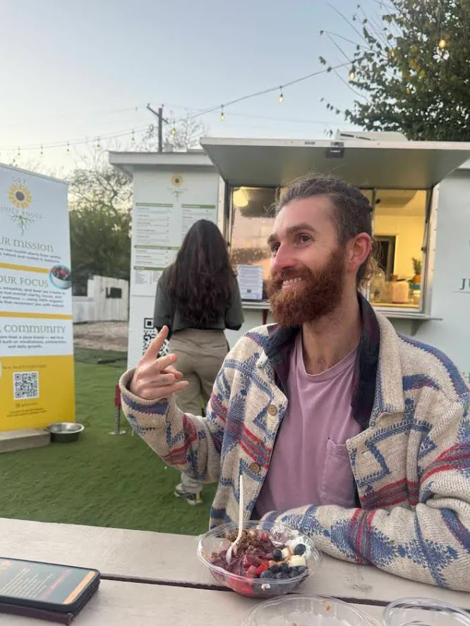
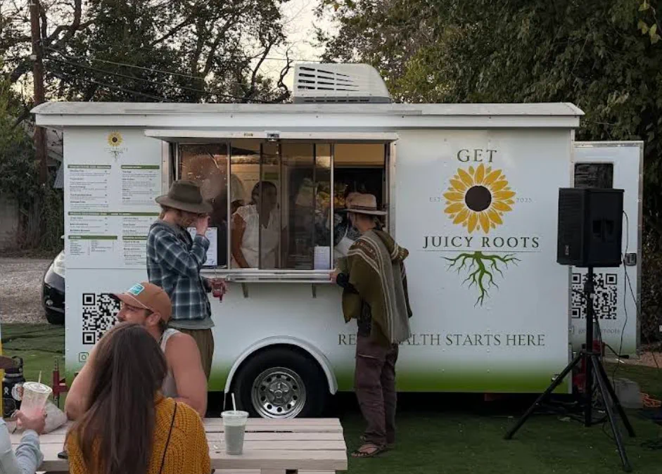

Fresh-pressed juice
Carrot and citrus, pressed bright and cold.
Cold-pressed juice, smoothies, and açaí bowls, blended fresh and 100% organic. Real food to help you feel clear, rooted, and well.
No powders, no shortcuts. Whole fruit and 100% organic ingredients, every cup and every bowl.

Carrot and citrus, pressed bright and cold.

Layered with fresh fruit, banana, and granola.
Whole-fruit blends, light and full of color.
Health starts within. We grow it with real food and 100% organic ingredients, the kind that bring clarity, focus, and ease, and reconnect you with nature. More than a juice blend, we're a little community built on mindfulness, connection, and daily growth.
Best smoothies and juices! The menu is delicious with incredibly thoughtful, fresh and high quality ingredients. Hydrogen water tastes so good!Devon Swinburne · Local Guide
I got the açaí bowl and the elevate açaí bowl. Both were incredible. You can tell they use the best ingredients.Breanna Whipps · Local Guide
Had their ocean roots juice and morning fuel smoothie. Sooo yummy!Google review
Great smoothies, affordable pricing, amazing quality and great customer service.Google review
A perfect 5.0 on Google, across 157 reviews.
Get Juicy Roots is a family business, started by a veteran who just wanted to serve real, honest food. Everything is made with care and intention, from the organic produce to the water in your cup.
Find us with the picnic tables and string lights on South Congress. Come for a bowl, stay for the people. Health starts here.

Hours and stops can change. Give a call to confirm today.